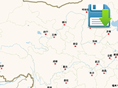

Example of runtime saving map state.
Usage instructions:
Add this script to map GameObject.
Add this script to map GameObject.
SaveMapStateExample.cs
/* INFINITY CODE 2013-2016 */
/* http://www.infinity-code.com */
using System.Collections.Generic;
using UnityEngine;
namespace InfinityCode.OnlineMapsExamples
{
[AddComponentMenu("Infinity Code/Online Maps/Examples (API Usage)/SaveMapStateExample")]
public class SaveMapStateExample : MonoBehaviour
{
private string key = "MapSettings";
private void LoadState()
{
if (!PlayerPrefs.HasKey(key)) return;
OnlineMaps api = OnlineMaps.instance;
OnlineMapsXML prefs = OnlineMapsXML.Load(PlayerPrefs.GetString(key));
OnlineMapsXML generalSettings = prefs["General"];
api.position = generalSettings.Get<Vector2>("Coordinates");
api.zoom = generalSettings.Get<int>("Zoom");
List<OnlineMapsMarker> markers = new List<OnlineMapsMarker>();
api.markers = markers.ToArray();
}
private void OnGUI()
{
if (GUI.Button(new Rect(5, 5, 150, 30), "Save State")) SaveState();
}
private void SaveState()
{
OnlineMaps api = OnlineMaps.instance;
OnlineMapsXML prefs = new OnlineMapsXML("Map");
// Save position and zoom
OnlineMapsXML generalSettings = prefs.Create("General");
generalSettings.Create("Coordinates", api.position);
generalSettings.Create("Zoom", api.zoom);
// Save 2D markers
api.SaveMarkers(prefs);
// Save 3D markers
api.GetComponent<OnlineMapsControlBase3D>().SaveMarkers3D(prefs);
// Save settings to PlayerPrefs
PlayerPrefs.SetString(key, prefs.outerXml);
}
private void Start()
{
LoadState();
}
}
}